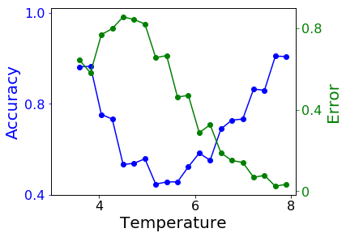
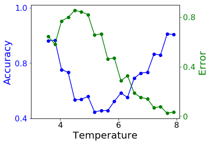

Machine Learning in Condensed Matter Physics
Nowadays almost every place is using machine learning (ML). Machine learning is a type of artificial intelligence (AI). It gives computers the ability to learn without being explicitly programmed. To make things concrete, we train a machine by making it do similar tasks repeatedly just the same as we teach a baby to speak by saying words again and again. A baby learns a word after it has heard it enough times. A machine learns to do a task after it has practiced enough.
For example, we want to know the regular body temperature of a person at different time of a day. We do not know a mathematic formula to calculate the temperature, but we can record the temperature of that person several times a day. We record for a couple of days, and can use all the data to train a machine. After training, the machine should be able to give the expected body temperature of that person provided with a time. Sounds like finding empirical functions, right? Indeed, we can try to get an empirical function when features are not too many and sample size is large enough. This is exactly what some non-parametric methods are doing. However, when there are too many features we won't be able to explore all the points in the feature space (curse of dimensionality). Then we assume we can approximate the underlying true function with specific types of functions. The simplest type is linear function. More complicated functions may give a better approximation, but what type of functions to use completely depends on the problem we want to solve.
Above we were talking about supervised learning. On the contrary, unsupervised learning is letting machines explore the data by itself. Only input data is given to the machine during training. The machine needs to discover patterns or structures of the input data.
How can we apply machine learning to condensed matter physics (CMP)? One important problem in condensed matter is to characterize different phases of matter. Classical phase transitions associated with symmetry breaking can be classified by local order parameters. In numerical studies, it is sometimes not easy to calculate the order parameters directly. On the other hand, new phase transitions beyond the theory of symmetry breaking were discovered recently. In either case, machine learning can be a method from new perspective.
We will not talk about the details of machine learning algorithms in this post, but only applications in CMP. The python package scikit-learn is used to do the training.
Fitting 1D functions
Before working on physics problems, let's try some machine learning methods. Start from the simplest case: fitting functions with only one variable. We want to do this first because we generate data all by ourselves; we know the underlying true function and we can easily compare the performance of different models. Second, it is easy to visualize 1D functions in a 2D plane.
There are two purposes to do function fitting. One is interpreting the data using some simple functions like linear function. The other is smoothing the data and getting empirical functions. These two purposes are contradictory. We always want a simple function for easy interpretation, while a complex function can better fit the data. In machine learning, we care more about fitting than interpreting.
Here we use four models to do the fitting: simple linear regression (SLR), random forest (RF) and neural networks with one (NN1) and two (NN2) hidden layers. The first hidden layer has 100 neurons and the second 20 neurons. We use rectifier as activation function for hidden layers.
We test on three functions: a smooth function, a function having discontinuity and a function having singularity. 500 training samples and 100 testing samples are generated with error term following standard normal distribution. In the following figures, we plot 20 testing samples. The underlying functions that generate the data are shown in solid black lines. True values of the data are plotted as black dots. In the legend, we also presents the root mean square (RMS) calculated from all the 100 testing data.


Among the four methods, random forest always gives a small RMS error no matter what underlying functions are. It is easy to understand, since random forest is an ensemble of trees. Each tree is like a piece wise constant function. Although predictions from a single tree have large variance, averaging over uncorrelated trees significantly reduce the variance, making random forest a reliable method.
Simple linear regression is the simplest non-trivial model one can think of. It gives the overall trend of data. From another perspective, simple linear regression can be viewed as a feed-forward neural network with no hidden layers. Adding hidden layers in neural network is effectively perturbing the linear regression line towards the true curve. As we can see from the figures, NN1 performs a little bit better than SLR while NN2 is better than NN1. Note that a shallow neural network can only capture the main features of the curve.
1D classification
In machine learning, we sometimes need to make predictions on categorical variables, i.e. classification problem. It is similar to fitting step functions with numerical response. However, we've seen that linear regression cannot fit the step function properly. A better way is to transform the fitted value by sigmoid functions. It's a group of S-shaped functions mapping from [-∞,∞] to [0,1]. The most commonly used sigmoid in this problem is the logistic function. Therefore, a linear classification problem is also called logistic regression.
Again, we fit the classification problem using four methods. The error calculated by cross entropy is listed in the legend. The black solid line is the probability in Bernoulli distribution used to generate data. We plot the predicted probability as scatters.


As can be seen in the figures, random forest performs worst among the four. It can hardly follow the trend of the underlying probability. This is due to its high variance compared with other methods. When the underlying probability function is not too complicated, it can be well approximated by neural networks and sometimes even linear functions. In such case, the high variance of random forest makes it less favorable.
Machine learning phase transitions in classical Ising model
After some practice in 1D problems, we can start a real physics problem. Classical Ising model can model magnet in a simple and straightforward way. The model assumes that every atom in a material has a small magnetization. We call them spins σ. To make the problem even simpler, the spins are assumed to take only two directions. Mathematically, σ={±1}. The total magnetization of the material is just the sum of all σ.
Assume spins only interact with their nearest neighbors with interacting energy Eij=-σi σj. A system always wants to lower its energy, so such a interaction favors a state with all σ having the same value i.e. parallel spin configuration. However, this only happens at zero temperature. At finite temperature, thermal flotation will flip spins randomly. The higher the temperature, the more accepted flips. As long as the total magnetization is non-zero, the material is said to be in a ferromagnetic phase. When temperature is high enough, the parallel structure is completely destroyed. The total magnetization becomes zero. Then the material is in paramagnetic phase.
In physics, the transition between ferromagnetic and paramagnetic phases is known as a second order phase transition. There is a specific temperature that separate the two phases. Now the problem is what is that temperature? To get this transition temperature, we study a spin system on a 2D square lattice with periodic boundary conditions using Monte Carlo simulation. We plot the averaged magnetization of this system in the following figure. The vertical black dash line is the theoretical transition temperature. As we can see, by calculating the magnetization we can easily separate the two phases. The magnetization drops to zero in paramagnetic phase. Actually, magnetization is the physical order parameter of such system.
Supervised learning
Suppose we do not know the actual transition point nor how to calculate the total magnetization, can we use machine learning to determine the transition point? We know that when temperature is low the system must be in the ferromagnetic phase (labeled as 1), while at high temperature the system is paramagnetic (labeled as 0). We generate some states at low temperature and label them as 1 and generate states labeled as 0 at high temperature. Using these generated spin configuration to train a neural network with only one hidden layer, we get the predicted probability of being in ferromagnetic phase as shown below

The blue dots are predicted probability and yellow stars are magnetization of corresponding test data. The black dash line is again the theoretical transition point. The training data are generated from the temperature of the green shade. From the figure, it seems machine learning can indeed predict the transition point accurately.
What is this neural network capturing in the hidden layer? We plot the value of neurons in the hidden layer in the following figure. When the configuration is from low temperature, the values of hidden neurons are zeros and values with large absolute value. On the other hand, configurations from high temperature gives small absolute values of hidden neurons.
Confusion scheme
Sometimes, we do not even know whether there is a phase transition within the parameter range. We may try to do something called confusion scheme. The idea is quite simple. When we do not know the exact phase transition point, we guess a value and do training and testing according to this value. If the value we guessed is close to the true transition temperature, the testing error will be small and accuracy will be close to one. Otherwise, we will get large error and low accuracy. We try several different transition point within a parameter range. The error should be a local minimum when the trial point is the true transition point.
 

In this problem, transition temperature Tc=2.27. Above we plot the testing error and accuracy verses trial transition point. The true transition point is within the parameter range in the left figure, while not in the figure on the right. Errors near the edges are always small because we can always predict the majority class to get a low error.
As we can see in the figures, when the true transition point is among the trial points the testing error has local minimum other than at two edges. when the true transition point is not included, the testing error only has local minimums at the edges.
Unsupervised learning
Using confusion scheme, we still need to have some knowledge of the system. Can we separate the phases only from their spin configuration? First we try to plot the data in a 2D plane. We use principal component analysis (PCA) to find the plane with largest variance and project the data onto that plane.

As can be seen from the figure, the data are clearly clustered into three groups. We apply K-means clustering method to classify the states using three groups. The center of clusters are marked as red stars. The plot is consistent with our expectation. The middle one is the paramagnetic phase. The left and right groups are ferromagnetic phases with positive/negative magnetizations. We plot the predictions made by K-means clusters on the right. We can see that the model is cable to separate the two phases. However, there are some misclassifications near the transition temperature.
We notice that a linear PCA may not be the best way to see the separation, so we apply kernel PCA using radial basis function (RBF). We repeat the same procedure except using the data after kernel PCA transformation for clustering. The results are plotted above. The plotted data indicates a better separation between the phases. It is demonstrated in the prediction, as the misclassified area gets narrowed down.
In this post, we applied machine learning to a simple physics problem. Note that, the order parameter is a linear combination of the spin configurations. Because of the simplicity of the problem, we get quite neat results even using basic machine learning techniques.
References
- Carrasquilla, Juan, and Roger G. Melko. "Machine learning phases of matter." Nature Physics (2017)
- van Nieuwenburg, Evert PL, Ye-Hua Liu, and Sebastian D. Huber. "Learning phase transitions by confusion." Nature Physics 13.5 (2017): 435-439
- Source code: here
Comments